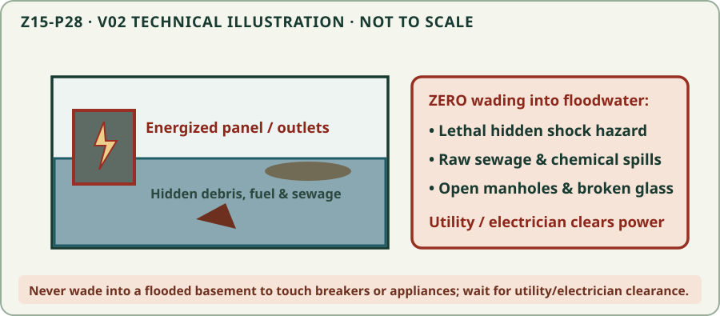

Z15-P28 · Disaster scenarios · New manuscript
Avoid hidden biological, chemical, and electrical hazards in floodwater
Prevent electrocution, severe wound infections, chemical burns, and unseen drop-off drownings during and after floods.
When it applies · Flooded yards, streets, basements, parks, and riverbanks after heavy storms or snowmelt crests.
Equipment · Strict avoidance discipline, waterproof boots/gloves/goggles/N95 (for cleared shallow recovery only), and potable wash water.

Actions
- Treat EVERY drop of urban or rural floodwater as dangerous mixed hazard water containing raw municipal/septic sewage, spilled heating oil/gasoline, agricultural pesticides, sharp submerged glass/metal, displaced wildlife, and potentially energized downed electrical lines.[D05, U13, W18]
- Keep children and pets completely OUT of flooded yards, ditches, and storm-drain puddles—never allow playing, wading, or kayaking in neighborhood floodwaters where submerged open storm culverts create deadly underwater suction traps.[D05, N10]
- If accidental skin contact occurs, wash immediately and thoroughly with soap and confirmed safe potable water, keep any open cuts covered cleanly, and seek prompt medical evaluation for any floodwater-exposed wound or tetanus update.[M06, W29, D05]
Failure recognition · Letting kids splash barefoot in ankle-deep neighborhood street floodwater near a storm drain and submerged electric transformer box.[D05, M06]
Verify · Confirm zero recreational wading, zero bare-skin floodwater contact, immediate soap/safe-water washing if splashed, and cuts escalated clinically.[D05, M06]
Stop or change course · Downed wires near floodwater, fuel sheens, fast current, or open wounds prohibit entering the water completely.[D05, U01]
Evidence and editorial notes
- D05 · FEMA / Ready.gov · Floods (current web edition)
- Section: Floods: During; Turn Around, Don’t Drown · Conditions: Flooded roads or trails, flood alert, or post-flood re-entry
Support: Move to safe higher ground when directed, never walk or drive into floodwater, and respect closures and re-entry restrictions.
Limitations: Depth examples are warning illustrations, never safe entry thresholds. Trapped or submerged vehicles require emergency help and scene-specific response. · Conflicting evidence: See A02 claim audit for boundaries.
Editorial note: Core flood evacuation, water-avoidance, and safe re-entry evidence. · Specialist reviewer: Emergency management and flood hydrology
Primary source · checked 2026-11-24 - M06 · NIH / MedlinePlus · Wounds and Injuries (current web edition)
- Section: Minor Wound Cleaning, Protection, and Infection Red Flags · Conditions: Superficial cuts, scrapes, and abrasions with potable water available
Support: Rinse minor wounds thoroughly with clean potable water, cover with a clean sterile dressing, and monitor for worsening redness, warmth, swelling, pus, red streaks, or fever.
Limitations: Deep punctures, animal bites, retained foreign bodies, or heavily contaminated wounds require clinical evaluation and tetanus review. · Conflicting evidence: None; separates clean potable rinsing from harsh chemical wound scrubbing.
Editorial note: Anchors field wound hygiene and infection escalation cards. · Specialist reviewer: Wilderness medicine and wound care
Primary source · checked 2026-11-24 - N10 · NWS · Turn Around Don't Drown (current web edition)
- Section: Turn Around Don't Drown > Flooded Crossings and Terrain Detours · Conditions: Navigating around flooded streams, washes and submerged roads
Support: Water barriers and flooded crossings conceal washed-out banks, swift undercurrents and deep holes; detour along verified dry high-ground routes or hold in a safe elevated spot.
Limitations: Applies equally to foot and vehicle navigation. · Conflicting evidence: Aligns with B014-P12 and T07.
Editorial note: Connects navigation rerouting to flood and water-barrier boundaries. · Specialist reviewer: Search and rescue and emergency management
Primary source · checked 2026-11-24 - U01 · FEMA / Ready.gov · Power Outages (current web edition)
- Section: Power Outages > Preparing and Responding Safely · Conditions: Residential utility electrical outages of hours to days
Support: Keep phones/medical batteries charged, maintain flashlights instead of candles, unplug sensitive appliances to protect against restoration surges, and verify backup power plans for electrically dependent medical devices.
Limitations: Home outage durations vary widely by grid damage; extended winter outages require heat/evacuation contingencies. · Conflicting evidence: None; aligns with CPSC and NFPA.
Editorial note: Establishes household outage baseline and medical-power priority in Z13. · Specialist reviewer: Emergency management and electrical safety
Primary source · checked 2026-11-24 - U13 · CDC · How to Make Water Safe in an Emergency (2024-09-19)
- Section: Sanitation, Hand Hygiene, and Emergency Waste Containment · Conditions: Household water-service or sewer interruption
Support: Maintain separate handwashing stations using safe water and soap (or alcohol hand rub when hands are not visibly soiled), line emergency bucket toilets with heavy bags and tight lids when sewer service is unusable, and never mix bleach with ammonia or acids.
Limitations: Improvised sanitation is a temporary containment bridge until municipal sewer or licensed sanitation resumes; follow local health department disposal orders. · Conflicting evidence: None; prevents fecal-oral outbreaks and toxic chloramine gas mixing.
Editorial note: Core household sanitation and chemical-mixing boundary in Z13. · Specialist reviewer: Environmental health and sanitation specialist
Primary source · checked 2026-11-24
Current assessment · A04-U13 (2026-11-25) · Open: support partial or missing (A04): The original water section cannot qualify bucket toilets or all chemical conditions. Water/hygiene and sanitation/chemical controls need partial separation and local sanitation review. Limits: Specialist review PENDING (Environmental health and sanitation specialist); publication HOLD. All release decisions pending.
Current assessment · W2C-E035 (2026-11-28) · Narrowed: later guidance limits this claim: Alcohol rub is a fallback only when soap and water are unavailable; it does not replace handwashing after toilet, diaper or vomit tasks or before food. Limits: The baseline U13 text is kept for history; cards now cite U26 and U27 for the hand-hygiene boundary. - W18 · CDC · What to Do With Your Private Well After a Flood (current web edition)
- Section: How to Disinfect Wells After an Emergency > Safety precautions and before returning to use · Conditions: Private drinking water wells submerged or impacted by floodwater
Support: Do not drink flood-impacted well water; rely on bottled or verified safe water, watch for fuel/chemical spills, and use qualified well contractors for inspection, electrical safety, and disinfection.
Limitations: Well shock-chlorination is unsafe to improvise around damaged electrical equipment or chemical releases. · Conflicting evidence: None; aligns with EPA private-well guidance.
Editorial note: Prevents DIY well repair or consumption before testing confirms safety. · Specialist reviewer: Drinking-water utility and environmental health
Primary source · checked 2026-11-24 - W29 · CDC · How to Make Water Safe in an Emergency (2024-09-19)
- Section: Use safe water for drinking, brushing teeth and food preparation · Conditions: Applicable emergency-water advice and permissible uses under active local advisory
Support: Use confirmed safe water for oral and food-contact tasks. Follow current local instructions for each use.
Limitations: Infant formula requires separate P26 conditions. Wound care requires the appropriate care source. · Conflicting evidence: See A02 claim audit for boundaries.
Editorial note: Separates potable-required tasks from non-potable utility uses. · Specialist reviewer: Public health and wilderness medicine
Primary source · checked 2026-11-24
Current assessment · A04-W29 (2026-11-25) · Bounded support newly confirmed (A04): Confirms safe water for oral and food-contact uses and the local-advisory boundary. Limits: Specialist review PENDING (Public health and wilderness medicine); publication HOLD. All release decisions pending.
Source lineage · FEMA Ready.gov Floods and CDC Water; new manuscript · Classification · New manuscript.